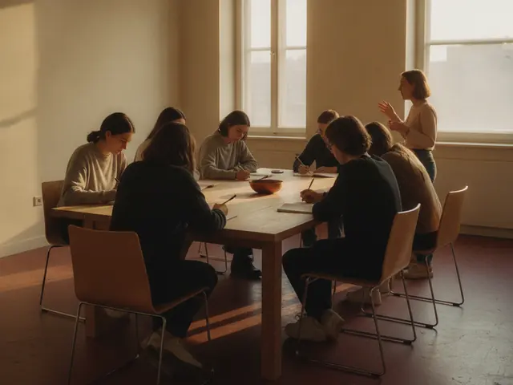
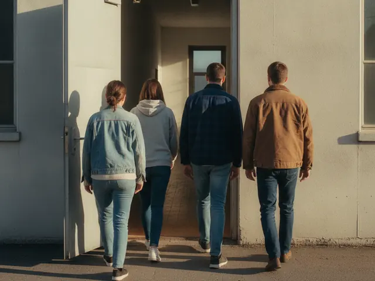
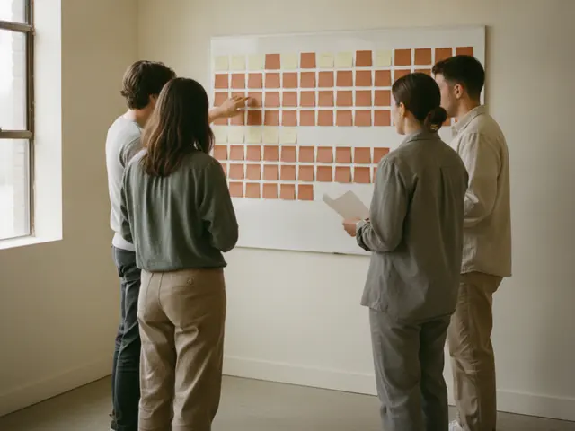

איך זה עובד
פוגשים מנכ״ל בקמפוס, ואז נכנסים לעבוד בתוך ארגון.
-
01לומדים בקמפוס

המפגש בקמפוס נפתח ב־45 דקות של מנכ״ל או מנכ״לית שמספרים איך הוקם הארגון שלהם ומה עדיין לא עובד בו, ומשם עוברים לעבודת צוותים באותו חדר על הבעיה עצמה.
-
02עובדים בשטח

מפגש השטח נעשה בתוך ארגון: מגיעים בבגדי עבודה, עובדים לצד העובדים, ויושבים עם ההנהלה על איך המקום מתנהל באמת.
ההנהלההעובדיםהשטח
-
03מקימים משהו משלכם

לאורך הסמסטר כל צוות בונה מיזם חברתי משלו ומציג אותו בערב הסיום. יוצאים עם הכלים והניסיון להמשיך איתו.
יוצאים עם מיזם, לא עם סיכומים.
את מי פוגשים
המפגשים בקמפוס נפתחים בשיחה עם מנכ״ל או מנכ״לית של ארגון חברתי. במפגשי השטח נכנסים לתוך ארגון ועובדים בו.
שמות האורחים יתפרסמו אחרי שיאשרו.
צוות ההנהלה
שאלות
מצטרפים?
הרשמה עד למילוי · תאריך אחרון · הטופס יפורסם כאן
ההרשמה נפתחת בקרוב